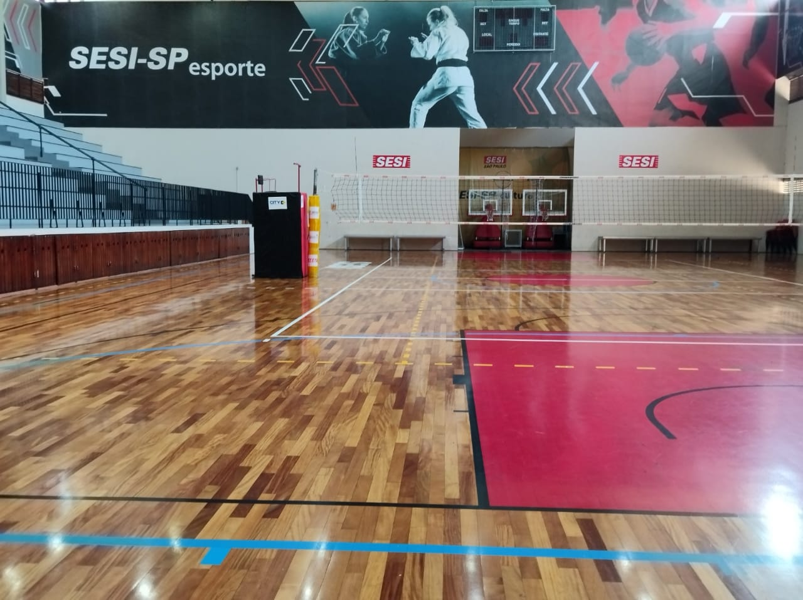
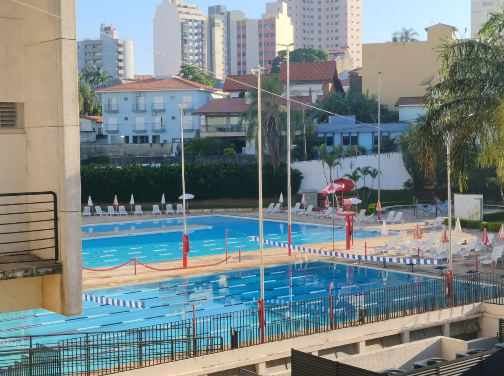
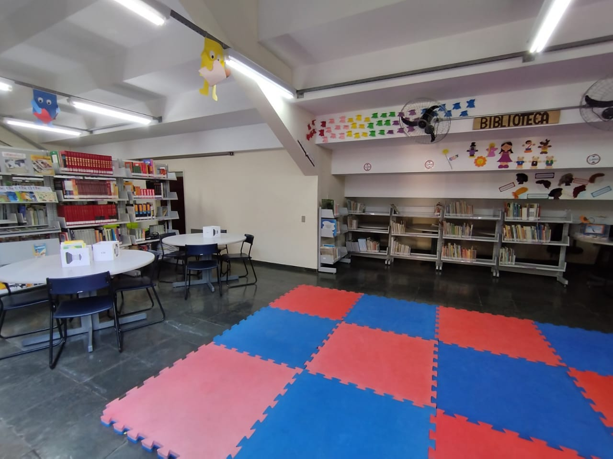
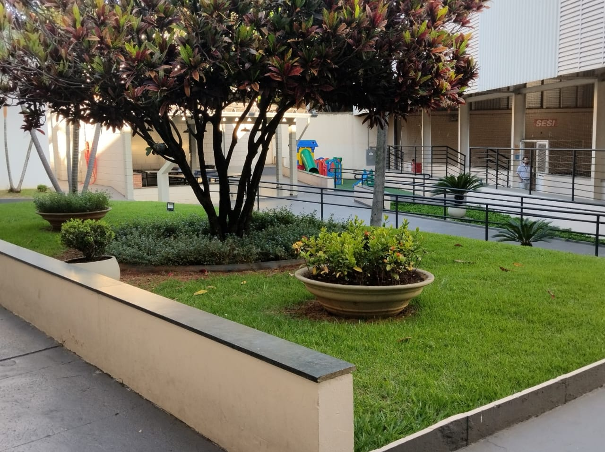

A rede SESI é uma instituição escolar que preza o respeito e a integridade, de todos os alunos seja qual seus status,etini, cor, entre outros fatores.Sua infraestrutura é algo sofisticado, moderno mas simples ao acolhimento de todos(as)

Uma das areas da intituiçao e a area mayker que se desenvolve as questoes e aprendizados tecnologicos com inpressora 3D, que uma das novidades, computadores para os alunos quando puderem para trabalhos ou aulas
No SESI nao so priorizam a tecnologia mas tambem o esporte como o futebol, basquete e o forte, o volei que integra atletas homens e mulheres com desenpenhos extravagantes.
O SESI tambem proporciona para membros do club a utilizaçao da piscina com a idroginastica e para dias bem quentes.
A biblioteca do SESI disponibiliza os livros so para os alunos, com um ar aconchegante e relaxante.
Tambem dispoem um playground recreativo para crianças e um quiosque com messas de ping pong.
HISTORIA:
O Centro de Atividades Senador José Ermírio de Moraes | SESI Sorocaba iniciou suas atividades em 1969, através de convênio firmado com a Prefeitura Municipal. A unidade oferece soluções para as empresas industriais brasileiras por meio de uma rede integrada, que engloba atividades de educação, segurança e saúde do trabalho, cultura e qualidade de vida.
Patrono SENADOR JOSÉ ERMÍRIO DE MORAES Nasceu em Pernambuco, no dia 21 de janeiro de 1900. Formou-se no curso de Engenharia de Minas, nos Estados Unidos. Sua formação e experiência na escola de engenharia do Colorado (EUA), permitiu que implantasse nas empresas do Grupo Votorantim o processo de racionalização produtiva. Foi um dos fundadores, em 1928, do Centro das Indústrias do Estado de São Paulo (CIESP). Participou ativamente da Revolução Constitucionalista. Ingressou na vida política em 1962, sendo eleito senador de Pernambuco e, em 1963, assumiu o ministério da Agricultura. É patrono do Centro de Atividades do SESI de Sororcaba.